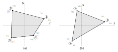
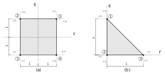

Fundamentação
Uma estrutura ou peça estrutural somente pode ser analisada utilizado um estado plano se toda a sua geometria, todas as cargas aplicadas, todos os apoios e todos os quaisquer efeitos externos estiverem contidos em um mesmo plano. Caso contrário não se aplica a análise pelo estado plano.
Nos vamos trabalhar com dois tipos de estados planos: o estado plano de tensões, caracterizado por todas as tensões com valores que podem ser diferentes de zero estarem dentro do plano idealizado da geometria e o estado plano de deformações, caracterizado por todas as deformações com valores que podem ser diferentes de zero estarem dentro do plano idealizado da geometria da estrutura ou peça estrutural. As demais componentes de tensão ou deformação para o estado plano de tensão e de deformação respectivamente, que estão fora do plano sempre terão valor igual a zero.
Lembrando que a teoria aqui desenvolvida leva em conta algumas simplificações:
- o material deve estar com valores de tensão e/ou deformação dentro dos limites elasticos-lineares;
- as análises são sempre estáticas, ou seja, o carregamento é considerado como velocidade muito baixa e somente seu efeito após ser completamente aplicado é considerado;
- não são levados em conta nenhum efeitos de segunda ordem, portanto, os valores dos resultados sempre se referem a estrutura indeformada;
- a relação entre deformações e deslocamento é considerada linear, ou seja, o valor das deformações deve ser muito baixo.
Resumindo, a análise é estática linear.
Estado plano de tensão
Conforme já apresentamos mais de uma vez, o estado plano é caracterizado por tensões que ocorrem somente dentro de um plano específico da estrutura ou peça estrutural, portanto, sendo, por exemplo, esse plano o plano x-y, a relação constitutiva do material no regime elástico-linear para esse estado plano é escrita entre deformações e tensões como:
Sendo $\textbf{C}$ a matriz de conformidade do material.
Observe que a deformação $\varepsilon_{z}$ perpendicular ao plano x-y é determinada com as tensões $\sigma_x$ e $\sigma_y$. Como em elementos finitos os deslocamentos são nosso primeiro resultado e as deformações são calculadas com esses deslocamentos e as derivadas das funções de interpolação, precisamos dessa relação constitutiva escrita de forma inversa, com as tensões sendo calculadas pelas deformações. Porém, a matriz não é quadrada, ou seja, não inverte. Porém, como a deformação fora do plano $\varepsilon_z$ é função das tensões em x e y ela poderá ser determinada posteriormente ao cálculo das tensões ou ainda calculada com as deformações em x e y. Assim, nossa relação constitutiva simplificada para o estado plano de tensões é:
Com:
Ou:
Com a relação constitutiva simplificada, podemos escrever sua forma inversa para determinar as tensões de acordo com as deformações:
De forma condensada:
Sendo $\textbf{D}_t$ a matriz constitutiva simplificada do material no estado plano de tensão. Lembre que o módulo de elasticidade transversal G é:
Estado plano de deformação
Já o estado plano de deformações é caracterizado, como já dito, por deformações que somente ocorrem no plano específico da estrutura, portanto, sendo esse plano o plano x-y, a relação constitutiva do material no regime elástico-linear para o estado plano de deformação é escrita entre tensões e deformações como:
Sendo $\textbf{D}$ a matriz constitutiva do material.
Note que a tensão fora do plano $\sigma_z$ é determinada em função das deformações no plano e portanto pode ser calculada a parte. Dessa forma também podemos escrever uma relação constitutiva simplificada quadrada para o estado plano de deformações como sendo:
De forma condensada:
Sendo $\textbf{D}_d$ a matriz constitutiva simplificada do material no estado plano de deformação. E a tensão fora do plano por ser determinada por:
Observe que a única similaridade entre as relações constitutivas do estado plano de tensão e deformação é o cálculo da tensão de cisalhamento, sendo essa sempre função da deformação angular no plano multiplicada pelo módulo de elasticidade transversal.
Elementos do estado plano
Nós vamos trabalhar com dois elementos para o estado plano, um quadrilateral e outro triangular, ambos bilineares e isoparamétricos com dois graus de liberdade de translação por nó e 4 nós por elemento para o elemento quadrilateral e 3 nós para o elemento triangular. Significa que vamos utilizar funções de interpolação bilineares e essas mesmas funções serão utilizadas para interpolar as coordenadas do elemento padrão para o elemento na estrutura.
Aqui temos uma nova definição: formulação isoparamétrica e o elemento padrão. Na verdade já vinhamos utilizando um elemento padrão desde a treliça, que é o nosso elemento no sistema r-s. Ele sempre era horizontal, com o sistema local com origem no centro do elemento e com comprimento definido em $l$. A transformação dele em um elemento da estrutura era feita com a utilização do comprimento do elemento da estrutura e a matriz de decomposição ou rotação. No entanto, para o estado plano essa definição precisa ser melhorada e alguns conceitos precisam ser aplicados para conseguirmos montar um elemento padrão que consiga ser escrito para quaisquer elementos de estado plano da estrutura.
A questão é um pouco mais complexa. Não iremos conseguir utilizar a mesma metodologia dos elementos padrões unidimensionais, pois o nosso elemento do estado plano pode estar distorcido na estrutura. Sendo assim, não funciona tratar simplesmente dos comprimentos e da rotação é preciso levar em conta os comprimentos diferentes e a distorção desse elemento. Outro problema é a dificuldade de integrar a matriz de rigidez do elemento quando ele está distorcido. Como você integraria em r e s os elementos abaixo em sua área?

Complicado não? Os limites de integração seriam retas. E como você integraria em r e s o elemento abaixo em sua área?

Bem simples, não acha? Os limites de integração em ambas as direções seriam de -1 a 1 para o quadrilateral e de 0 a equação da reta ($s = -r + 1$) e de 0 a 1. Esses serão nossos elementos padrões quadrilateral e triangular para o estado plano.
Transformação de coordenadas e distorção do elemento
Muito bem, mas e o tal de isoparamétrico? Essa definição envolve a questão de que nem todos os elementos da malha da estrutura irão possuir lado igual a 1 ou 2 e serem regulares como os padrões. A transformação do elemento padrão no elemento da malha da estrutura vai levar em conta a modificação dos comprimentos e uma possível distorção do elemento. Fazemos essa transformação de coordenadas e de forma utilizando o operador Jacobiano definido pela matriz Jacobiana, reduzida para uma transformação bidimensional.
O valor absoluto do Jacobiano de uma transformação de um sistema de coordenadas é também utilizado para converter uma integral múltipla de um sistema para outro, ou seja, podemos calcular a integral complicada do elemento irregular aplicando o Jacobiano na integral simples do elemento padrão. No caso bidimensional, também mede o quanto a área do elemento padrão é distorcida na transformação. Sendo o elemento da estrutura definido no sistema x-y, a matriz Jacobiana de transformação do sistema r-s para o sistema x-y é:
Certo, mas em elementos finitos, como isso funciona? Eu não tenho as coordenadas x-y do elemento irregular escritas como uma função de r-s. Para isso nos iremos utilizar as mesmas funções de forma utilizadas na interpolação dos deslocamentos para a transformação de coordenadas entre o r-s e o x-y aplicando o mesmo conceito de interpolação porém agora nas coordenadas dos nós ao invés dos deslocamentos, ou seja:
Sendo $\textbf{x}$ as coordenadas em x-y, $\textbf{x} = \lbrace x \ y \rbrace^T$, interpoladas pelas funções de interpolação do elemento padrão $\textbf{N}$ multiplicadas pelas coordenadas dos nós do elemento da estrutura $\textbf{x}_e$, com as coordenadas x na primeira coluna e as y na segunda coluna. Os elementos que utilizam esse conceito são conhecidos por elementos isoparamétricos.
Essa interpolação das coordenadas serve para conseguirmos escrever as coordenadas dos elementos em x-y em função de r-s, $x \rightarrow x(r, s)$ e $y \rightarrow y(r, s)$, ou seja, cada ponto no sistema x-y equivale a um ponto específico no sistema r-s relacionados pela transformação entre os sistemas. Reescrevendo a equação $\ref{eq:xxe}$ expandindo $\textbf{N}$ e $\textbf{x}_e$, temos:
Sendo $N_1(r, s) $ a $N_4(r, s) $ as funções de interpolação do elemento quadrilateral padrão de 4 nós como exemplo, que vamos chamar simplesmente de $N_1$, $N_2$, $N_3$ e $N_4$. No triangular teríamos apenas 3 parcelas na soma.
Como sabemos que as coordenadas dos nós do elemento da estrutura $\textbf{x}_e$ são constantes as derivadas do Jacobiano se referem às derivadas das funções de interpolação, e portanto o Jacobiano do elemento quadrilateral de 4 nós, resulta:
Além disso, podemos utilizar o Jacobiano para montar as derivadas das funções de interpolação no sistema x-y, utilizadas para montar a matriz $\textbf{B}$, obtidas em função das derivadas das funções de interpolação $i$ no r-s pela regra da cadeia. Sabendo que as funções de interpolação $N_i$ dependem de $x(r, s)$ e de $y(r, s)$ e que esses por sua vez dependem de r e s, temos pela regra da cadeia:
Ou, de forma matricial:
Portanto, as derivadas das funções de interpolação no sistema x-y são obtidas pela multiplicação das derivadas das funções de interpolação no sistema r-s multiplicadas pelo inverso da matriz Jacobiana.
No acaso do elemento triangular padrão as mesmas definições são válidas, apenas reduzindo-se a quantidade de nós de 4 para 3.
Deformações
As deformações que ocorrem no elemento do estado plano dependem se estamos analisando o estado plano de tensões ou de deformações. Felizmente para ambos os estados planos podemos utilizar as relações constitutivas simplificadas nas quais somente as deformações em x, y e a de cisalhamento no plano x-y serão consideradas para ambos os estados. Além disso, conforme já comentado nas simplificações, somente consideraremos a relação linear entre deslocamentos e deformações.
Antes de começarmos a derivar as equações precisamos tem em mente que o campo de deformações ocorre no elemento da estrutura no sistema x-y e, portanto, utilizamos os deslocamentos da estrutura e não do elemento padrão em r-s.
Portanto, o campo de deformações geral para o estado plano se escreve:
Sendo $\boldsymbol{\partial}$ o operador diferencial. Observe que não é uma multiplicação matricial entre o operador diferencial e os deslocamentos. De forma simplificada, o operador diferencial apenas distribui as diferenciais pelos deslocamentos para formar as deformações. Substituindo na equação acima os valores de u(x, y) e v(x, y) de acordo com a interpolação por elementos finitos, na qual o campo de deslocamentos no interior do elemento é definido pelas funções de interpolação em x-y multiplicadas pelos deslocamentos nodais nos graus de liberdade do elemento da estrutura:
Sendo $\textbf{B}$ a matriz das derivadas das funções de interpolação em x-y de acordo com o operador diferencial $\boldsymbol{\partial}$, $\textbf{N}$ as funções de interpolação em x-y e $\textbf{u}_e$ os deslocamentos nodais nos graus de liberdade do elemento da estrutura no x-y.
Equilíbrio
Nós vinhamos definindo o equilíbrio de nossos elementos unidimensionais utilizando o princípio dos trabalhos virtuais. Os elementos do estado plano também poderiam seguir a mesma formulação, porém vamos mostrar uma formulação diferente para a obtenção do equilíbrio, mais robusta, que é o princípio da mínima energia potencial total.
Em sistemas conservativos, de todos os campos de deslocamentos cinematicamente admissíveis, aquele que corresponde ao equilíbrio leva a energia potencial total a um extremo. Se a condição de extremo for uma condição de mínimo, o estado de equilíbrio é estável. E é este estado que desejamos obter, portanto, o equilíbrio será atingido quando energia potencial total do sistema for minimizada.
A energia potencial total do sistema, $\Pi$ é a soma da energia interna de deformação $U_i$ com a energia potencial das forças externas $W$:
Energia interna
A energia interna de deformação é a energia armazenada pelo sistema quando está se deformando. Se for uma deformação elástica, como no nosso caso, toda a energia armazenada é restituída, caso contrário poderá se dissipar. No caso de nosso material trabalhando dentro de seu regime elástico linear, a energia interna de deformação é definida como a área sob a reta da relação entre tensão e deformação, ou seja, a área do triângulo da figura.
Interpretação
A analogia com uma mola pode ajudar a interpretar melhor a energia potencial total, pense assim: ao aplicarmos uma força na mola essa se deforma e armazena energia interna. A medida que a mola se deforma a energia potencial da força externa perde valor, não porque a força diminui, que aliás permanece constante, mas porque o caminho que essa força pode percorrer está terminando. Essa movimentação acontece até que a deformação pare e nenhuma das energias, tanto interna quanto externa, variam mais. Esse é o ponto equilíbrio estável, que é obtido quando a variação das energias do sistema é igual a zero e representa um ponto de mínimo da energia potencial total do sistema.
Nós estamos trabalhando com um elemento bidimensional com deformações normais em duas direções e mais a deformação de cisalhamento. Cada uma dessas deformações armazena uma energia de deformação interna, inclusive a distorção angular $\gamma_{xy}$, dessa forma podemos tratar a energia de deformação interna total como sendo a soma da contribuição de cada parcela de deformação. Portanto, para todo o volume V do elemento:
Substituindo $\boldsymbol{\sigma} = \textbf{D} \boldsymbol{\varepsilon}$, sendo $\textbf{D}$ o tensor constitutivo genérico que pode ser o do estado plano de tensão ou de deformação:
Substituindo as deformações pelas derivadas das funções de interpolação multiplicadas pelos deslocamentos nodais, conforme equação $\ref{eq:defBue}$, chegamos a energia de deformação interna formulada para elementos finitos:
Lembrando que como os deslocamentos nodais $\textbf{u}_e$ são constantes podem ser retirados da integral.
Energia externa
A energia potencial das forças externas nos já conhecemos, nada mais é que o trabalho realizado pelas forças externas, ou seja, suas intensidades multiplicadas pelo deslocamento na direção do deslocamento causado pela força, porém com valor negativo. Seu valor é negativo por que a energia potencial das cargas externas se reduz quando um trabalho é realizado, função do caminho percorrido (pense como uma bola caindo, quanto mais alto a bola está, maior a sua energia potencial, quanto mais baixo, menor e sua energia potencial diminui a medida que ela cai). As forças externas aqui serão compostas por forças de corpo (o peso próprio), forças distribuídas (cargas distribuídas aplicadas em lados do elemento) e forças concentradas (cargas aplicadas diretamente nos nós em cada grau de liberdade).
A energia potencial das forças de corpo $W_c$ é dada pela multiplicação dos deslocamentos no interior do elemento, u(x, y) e v(x, y), ou seja $\textbf{u}$ pelo peso específico do material do elemento $\boldsymbol{\gamma}$ (vetor em x-y), considerado constante no elemento. No caso das forças distribuídas, sua energia potencial $W_d$ é calculada pela multiplicação entre os deslocamentos do lado $l$ do elemento onde está aplicada $\textbf{u}_l$, medidos na direção de aplicação da carga, pela sua intensidade $\textbf{g}$ (vetor em x-y), também considerada constante no comprimento do lado aplicado. E por fim, o trabalho das cargas concentradas nos nós nos graus de liberdade simplesmente é a sua própria intensidade $\textbf{f}$ em cada grau de liberdade multiplicada pelo deslocamento do respectivo grau de liberdade $\textbf{u}_e$. Na forma matemática:
Vamos substituir os deslocamentos no elemento e no lado de aplicação das cargas distribuídas pelas definições de elementos finitos, escrevendo esses como a multiplicação das funções de interpolação $\textbf{N}$ pelos deslocamentos nodais nos graus de liberdade do elemento $\textbf{u}_e$.
Sendo, no caso, $\textbf{N}_l$ as funções de interpolação avaliadas no lado do elemento onde a carga distribuída está aplicada. Lembrando de novo que como os deslocamentos nodais $\textbf{u}_e$ são constantes podem ser retirados da integral.
Substituindo as equações $\ref{eq:U}$, $\ref{eq:Wc}$, $\ref{eq:Wd}$ e $\ref{eq:Wf}$ na equação $\ref{eq:Pi}$ obtemos a energia potencial total do sistema.
O mínimo da energia potencial total do sistema, para o nosso caso com as simplificações adotadas no início, é obtido com sua primeira variação no campo dos deslocamentos igualada a zero, ou seja:
Então, basicamente, precisamos calcular a derivada do funcional de energia potencial total do sistema em relação aos deslocamentos nodais, que é um tensor de 1$^a$ ordem (representado por um vetor) e igualar o resultado a 0 para obter a equação de equilíbrio.
Derivar em relação a um tensor?
Sim, isso mesmo. Mas não é complicado se soubermos interpretar. Lembre que as equações matriciais acima representam sistemas de equações lineares. Essa variação do funcional significa que para cada grau de liberdade que influencia no sistema, nós precisamos encontrar um valor mínimo para a energia potencial total e fazer isso para todos os graus de liberdade em todas as equações dos sistemas lineares. No caso do nosso sistema isso é feito com a primeira variação do funcional de energia potencial total em relação a cada grau de liberdade, ou matematicamente para $i$ graus de liberdade: Depois é só juntar novamente o resultado na forma matricial. Não se preocupe com a integral, o operador diferencial somente vai operar os deslocamentos nodais não influenciando em x nem em y.
A primeira variação da energia potencial total do sistema igualada a zero resulta em:
Que é a nossa equação de equilíbrio para os elementos finitos do estado plano de tensões ou deformações, dependendo do valor de $\textbf{D}$ utilizado. Podemos escrever essa equação de forma condensada como:
Sendo $\textbf{k}_e$ a matriz de rigidez do elemento e $\textbf{f}_e$ o vetor de forças nodais equivalentes do elemento.
Agora precisamos resolver essas integrais para calcular a matriz de rigidez do elemento. No entanto, note que $\textbf{B}$, a matriz de derivadas das funções de interpolação em x-y, depende do Jacobiano e o Jacobiano depende das coordenadas dos nós do elemento na estrutura em x-y, ou seja, para elementos de diferentes tamanhos teremos matrizes das derivadas das funções de interpolação $\textbf{B}$ diferentes e, consequentemente, matrizes de rigidez diferentes. Isso já acontecia antes, tínhamos as matrizes de rigidez diferentes por elementos função de seu comprimento e rotação mas ainda conseguíamos fazer uma integração analítica. Agora isso é um tanto mais complexo função das transformações necessárias. Por isso, vamos fazer a integração da matriz de rigidez desses elementos numericamente com a quadratura de Gauss.
Quase sempre...
Na verdade, conforme veremos adiante, com o elemento triangular de 3 nós ainda conseguiremos escrever uma matriz de rigidez analítica de forma simples, mas quaisquer outros elementos do estado plano essa integração se torna tão complexa, custosa e por vezes sem solução, que é mais fácil resolver pela integração numérica.
Integração numérica
Antes de calcularmos as matrizes de rigidez dos elementos quadrilaterais e triangulares precisamos comentar um pouco sobre a integração dos elementos padrão. Serão necessárias as integrais em r e s das derivadas das funções de interpolação no sistema x-y, escritas na matriz $\textbf{B}$ que pré e pós-multiplica o tensor constitutivo do material. Essa integral pode se tornar um tando complicada para ser resolvida de forma analítica como vínhamos fazendo com os elementos unidimensionais e em alguns casos, inclusive, pode nem ter solução.
Esse problema é contornado com a utilização da integração numérica e mais especificamente utilizaremos a quadratura de Gauss. Basicamente a quadratura de Gauss aproxima o valor de uma integral através de uma somatória ponderada de valores das funções a serem integradas em pontos específicos dentro do elemento conhecidos como pontos de Gauss multiplicadas por determinados pesos. Por exemplo, no caso de uma função de $f(x, y)$ para nosso elemento padrão quadrilateral, podemos escrever:
Sendo $n_r$ o número de pontos de Gauss $P_i$ em r, $n_s$ o número de pontos de Gauss $P_j$ em s, $f(P_i, P_j)$ a função $f(r, s)$ avaliada nos pontos de Gauss $P_i, P_j$. Em outras palavras, r substituído pelo valor r de $P_i$ e s substituído pelo valor s de $P_j$. $W_i$ e $W_j$ os pesos respectivos dos pontos $P_i$ e $P_j$. Claro que no caso da integração das matrizes de rigidez dos elementos do estado plano, nos iremos substituir a função $f(r, s)$ pelo resultado da multiplicação $\textbf{B}^T \textbf{D} \textbf{B} h det(\textbf{J})$, sendo $det(\textbf{J})$ o determinante da matriz Jacobiana para levar em conta a distorção da área do elemento, h a espessura do elemento e $\textbf{D}$ a matriz constitutiva simplificada do estado plano de tensão ou deformação conforme o caso, conforme veremos com mais detalhes adiante.
Com essa introdução sobre estado plano e já sabendo como transformar o nosso elemento padrão para o elemento da malha da estrutura e resolver sua integração aproximada, podemos então calcular as matrizes de rigidez dos elementos quadrilaterais e triangulares.